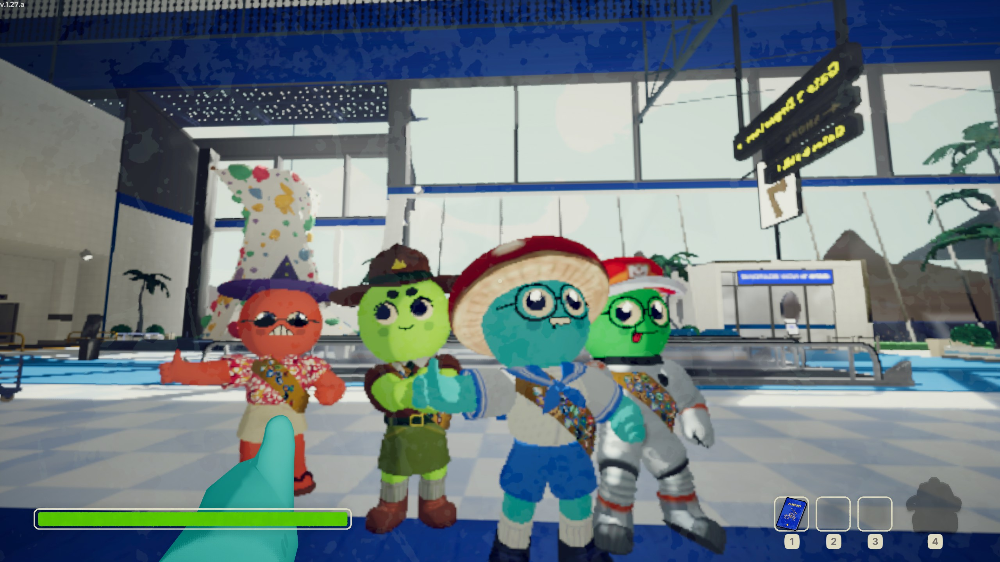

PEAK
| Release Date: | June 16th, 2025 |
| Genre: | Co-Op Adventure |
| Developer: | Landfall Games, Aggro Crab Games |
| Platform: | PC |
| Details: | Steam |
Peak is a cooperative hiking game made in game jam between Landfall Games and Aggro Crab Games. Yourself and 3 other scouts have crashed on an island, and must climb the island's mountain to signal for help! With the tools found within fallen luggage, your scout troop climbs the generated terrain, managing your hunger, stamina, and statuses to keep the trek on. It follows the pattern of other cooperative games as of late, hinging on proximity chat and the emergent gameplay of your chaotic group to make each run unique and hilarious. I kept hearing about the game, but it took till a recent sale for my friends and I to pick up, and man has it been fun.
Gameplay
This game is solely gameplay focused. Each day, a new island is generated for all players. The island is split into 5 different areas, each taking place in a different biome that presents unique challenges to your troop. This is nice in that if you play a lot within a single day, you learn the different routes of the island, making each ascent easier to accomplish. During your climb, you have single stamina bar. You expend stamina to run, jump, and climb, with each taking different amounts to maintain. What makes this interesting though, is it also acts like your health bar. If you get damaged, poisoned, sleepy, or just hungry, you'll have less stamina available to you, making the climb harder. Get too many statuses, and you'll pass out and eventually die.
With the climb getting harder between the biome and status on your stamina, it forces you into coming up with creative ways to make your ascent. You'll find various tools during the climb, which can help with some of the tricky areas of the climb, or to clear a path you cannot make with your limited stamina. Your fellow scouts can also help you out on your climb! There's a dedicated button for giving a "helping hand", which allows you to grab climbing players and reduce the amount of stamina they need to expend for the climb. Granted, you would've had to make the climb first, but it encourages teamwork by someone with the most stamina making the climb, and then help the others with less.
It's not that complex of a game and doesn't have a very high skill ceiling, but it really shines in the emergent gameplay it creates. Between the randomly generated map and the chaos your scout troop brings, each climb is unique in its challenge. We've had some hilarious moments of some of us getting overconfident in our abilities, laughing as we fall to our death. The voice proximity amplifies these moments, as their voice get quieter as they fall, or begins to echo within the caves. They also lose their ability to talk while unconscious, leaving the troop to figure out why you've passed out to be able to revive you before death.
Overall Thoughts
It's been a blast to play with my friends. Our core group has achieved all the available achievements at the time of writing, and managed to complete a Ascent 7 climb together! We've also been bringing in extended friends into our sessions, some nights getting 8 scouts all climbing together. While that amount makes the climbs significantly easier with the sheer number of tools you can hold onto, the chaos is amplified and has led to some hilarious moments to whole groups of players falling due to the mistake of one. We don't play it much nowadays, since we've experienced most of what the game has to offer at this point, but if they release more content for the game in the future, we'll be climbing that mountain again in no time!
Our squad after completing Ascent 7
